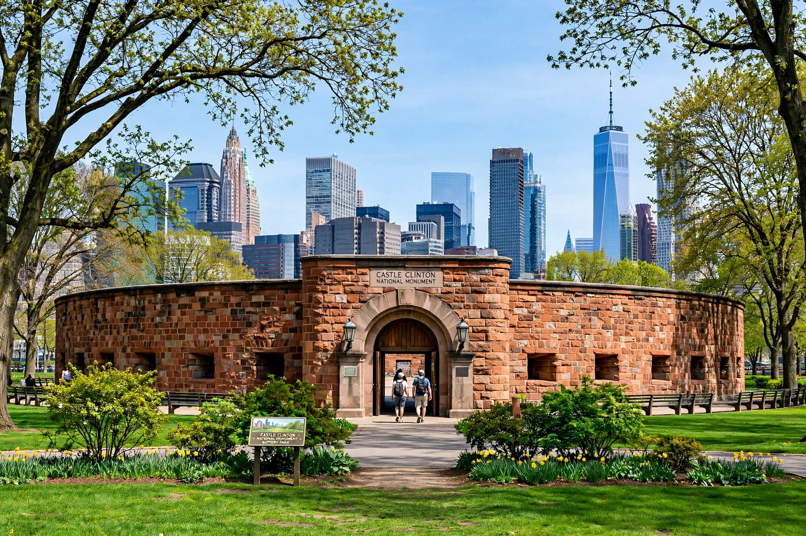

Castle Clinton National MonumentCastle Clinton, also known historically as the West Battery and Castle Garden, is a circular sandstone fort in Battery Park at the southern tip of Manhattan in New York City. It is now a national monument administered by the National Park Service and serves as a departure point for ferries to the Statue of Liberty and Ellis Island.
Built 1808–1811 on an artificial island offshore, the fort was part of New York Harbor's defences ahead of the War of 1812, though it never saw combat. It was named for DeWitt Clinton, mayor of New York and later governor. In 1824 it became the Castle Garden entertainment venue, hosting singer Jenny Lind's American debut in 1850.
From 1855 to 1890, Castle Garden was New York's immigration processing centre, through which an estimated eight million immigrants entered the United States before Ellis Island opened in 1892. It later housed the New York Aquarium (1896–1941), whose move was forced by Robert Moses's Brooklyn–Battery Tunnel plans, which also threatened demolition of the fort itself.
Preservationists saved the structure; it was designated a national monument in 1946 and restored in the 1970s. Today visitors buy Statue of Liberty ferry tickets inside its walls.